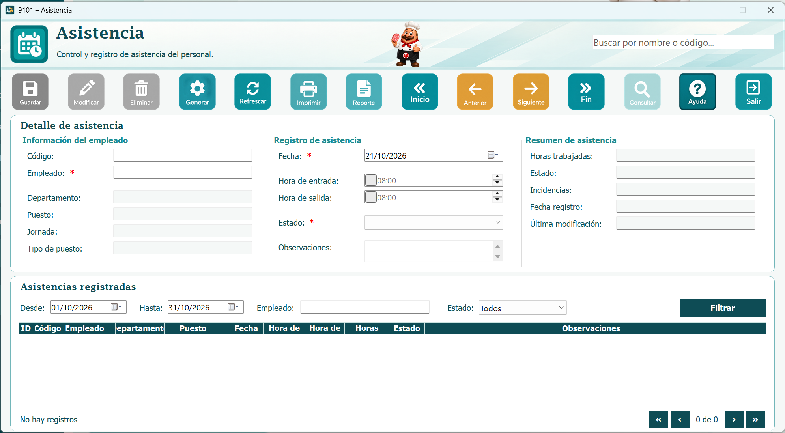
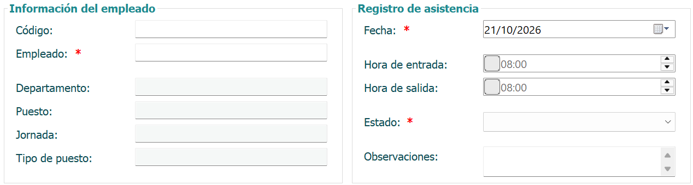
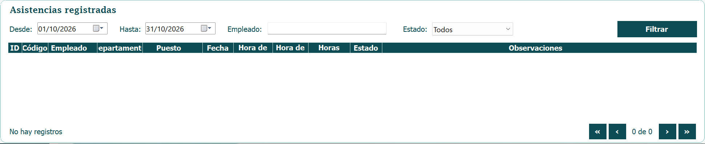

El módulo de Asistencia registra la hora de entrada y salida de cada empleado, calcula las horas trabajadas y señala llegadas tarde, ausencias y horas extra. Esta información alimenta el cálculo de la nómina.
Por ejemplo, si un empleado con horario de 8:00 a 17:00 marca entrada a las 8:20, el sistema registra una llegada tarde de 20 minutos. Si trabaja hasta las 19:00, se contabilizan 2 horas extra pendientes de autorización.

Presione Ingresar, seleccione el empleado, la fecha, y escriba la hora de entrada y de salida. Marque los checkbox de tardanza, ausencia justificada u hora extra según corresponda y agregue una observación si es necesario.

Una vez completados los datos, presione el botón Guardar. Si el registro es único, el sistema mostrará un mensaje confirmando que la grabación fue exitosa.

Si deja campos vacíos, el sistema lo validará y no permitirá guardar, mostrando un mensaje de aviso.

Si intenta ingresar un registro que ya existe, el sistema lo detectará e indicará que ya hay un registro igual.

Seleccione la fila completa que desea cambiar, actualice los datos necesarios y presione Modificar.

En el formulario se encuentran los botones de navegación, que le permiten desplazarse entre los registros: primero, anterior, siguiente y último.
Escriba en el textbox el nombre del empleado o fecha que desea buscar. No importan las mayúsculas o minúsculas. Luego presione el botón Consultar y se mostrarán todos los resultados que coincidan.

También se incluye un cuadro de control de registros para mejor accesibilidad y orden en la tabla.

Presione el botón Reporte para abrir una ventana con el listado de registros del módulo: empleado, fecha, hora de entrada, hora de salida, horas trabajadas, tardanza y horas extra.
Desde la barra superior del reporte puede desplazarse entre páginas, actualizar la información, ajustar el zoom, buscar un texto, imprimirlo o exportarlo.